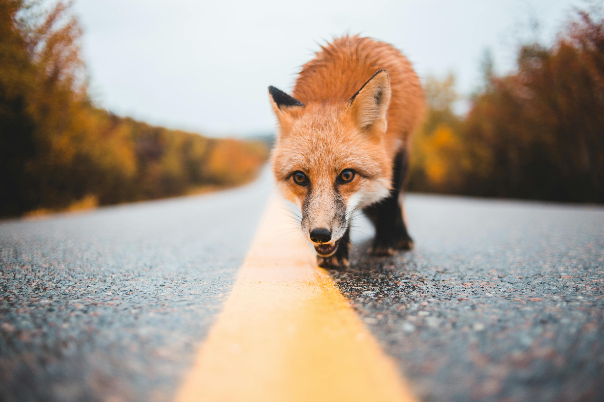
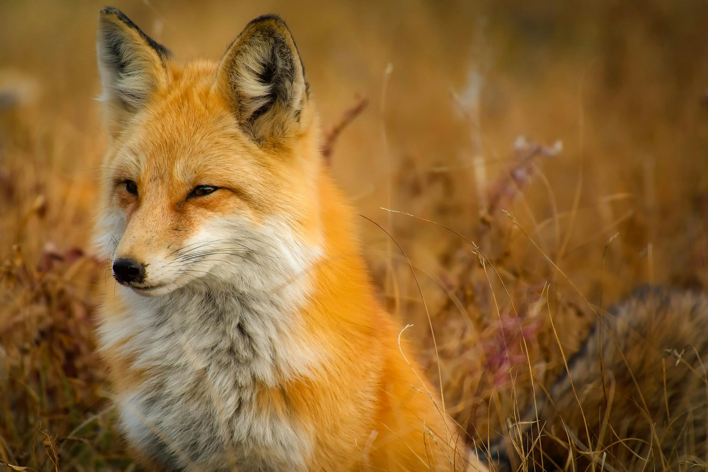

Mestres da Adaptação na Natureza
Pertencentes à família CanidaeConhecidas por sua astúcia e capacidade de adaptação, essas criaturas habitam quase todos os continentes, com exceção da Antártida.
As raposas incluem mais de 30 espécies diferentes, sendo a raposa-vermelha (Vulpes vulpes) a mais comum e amplamente distribuída.


Encontrada em regiões como Europa, Ásia, África do Norte e América do Norte, essa espécie destaca-se por sua pelagem alaranjada e cauda volumosa.
Raposas vivem em diversos habitats, incluindo florestas, desertos, montanhas e áreas urbanas. Elas constroem tocas para se proteger e cuidar dos filhotes, mas também são conhecidas por usar abrigos abandonados de outros animais.

São criaturas solitárias, exceto durante a época de reprodução ou quando estão cuidando dos filhotes. A dieta das raposas é onívora e inclui pequenos mamíferos, insetos, frutas e restos de comida deixados por humanos, o que reforça sua reputação como oportunistas.
Adaptação Urbana
Nos últimos anos, as raposas têm se adaptado à vida em áreas urbanas. Elas exploram lixo, jardins e parques em busca de alimentos, sendo frequentemente vistas em cidades como Londres e Tóquio. Apesar disso, mantêm seu comportamento arisco e evitam o contato direto com humanos.
Simbolismo e Importância Cultural
Raposas ocupam um lugar de destaque em mitos e lendas ao redor do mundo. Na cultura japonesa, por exemplo, a raposa (“kitsune”) é considerada um espírito inteligente e, muitas vezes, associado à deusa do arroz, Inari. No Ocidente, elas simbolizam esperteza e astúcia.
"Tu te tornas eternamente responsável por aquilo que cativas."
– Antoine de Saint-Exupéry, O Pequeno PríncipeCuriosidades
- Surgiu: 6 milhões de anos
- Tipo: Mamífero
- Idade média: Aproximadamente 3 a 6 anos na natureza
- Macho adulto: Aproximadamente 6 a 14 kg
- Fêmea adulta: 4 a 10 kg
- Família: Canidae (mesma família dos lobos, cães e coiotes)
As raposas possuem um grito característico, muitas vezes confundido com o choro de um bebê humano.
Sua cauda, chamada de "bush" ou "rabo", não é apenas ornamental: ajuda no equilíbrio e serve como cobertor em noites frias.
Elas conseguem saltar alturas impressionantes para capturar presas, mostrando uma agilidade notável.
As raposas são animais incrivelmente adaptáveis e desempenham um papel crucial nos ecossistemas, controlando populações de pragas e ajudando na dispersão de sementes. Sua astúcia e beleza continuam a cativar humanos ao redor do mundo, tornando-as um símbolo de resistência e inteligência.